Shinjuku has over 20,000 restaurants. Most tourists end up at the same handful of spots recommended by YouTube travel vloggers — queuing 45 minutes for Ichiran Ramen while locals eat better food for less money a block away.
We combed through hundreds of Reddit posts from r/JapanTravel, r/JapanTravelTips, and r/Tokyo to find the restaurants that actual travelers and Tokyo residents recommend over and over. Every spot on this list is under ¥2,000 per meal, and most are well under ¥1,000.
📊 How we built this list
We analyzed 200+ Reddit posts and 1,500+ comments across r/JapanTravel, r/JapanTravelTips, r/Tokyo, and r/ramen — spanning 2019 to 2025. Restaurants were ranked by how frequently they were recommended by independent users (not just one viral post). Every spot on this list was mentioned in at least 3 separate threads by different people. Upvote counts, commenter credibility (long-term residents vs. first-time visitors), and recency were all weighted.
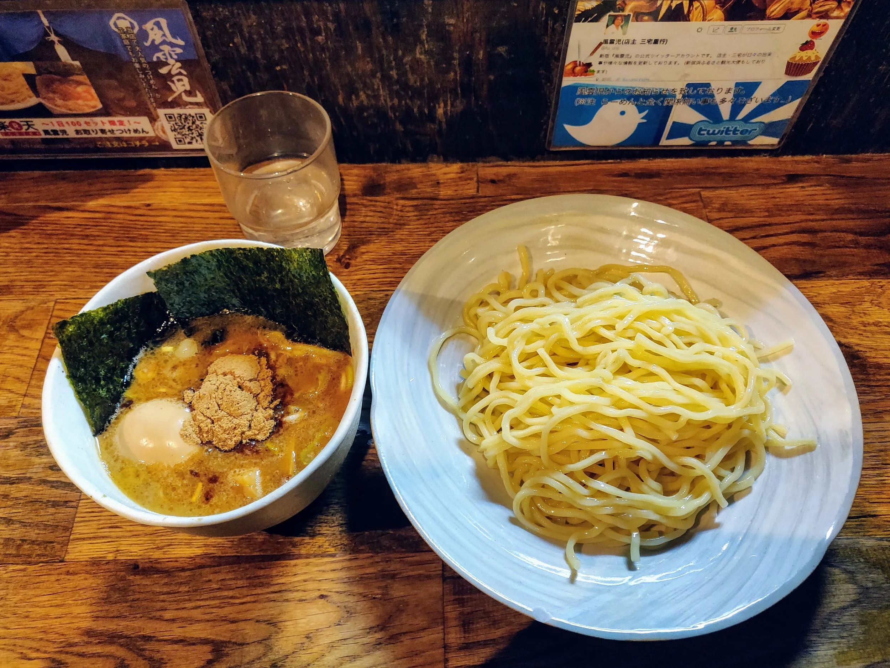
What to order: Tsukemen (dipping noodles) with the rich fish + pork broth. Get the large size — it's the same price. Add ajitama (seasoned egg).
"Fuunji is the best tsukemen I've ever had. The broth is incredibly rich — thick, fishy, umami bomb. There's always a line but it moves fast."
— r/JapanTravel · 97 upvotes
"Skip Ichiran. Go to Fuunji instead. The tsukemen is life-changing and the line moves in 15 minutes."
— r/JapanTravelTips
tabiji verdict: The single most recommended ramen-adjacent spot in Shinjuku across all of Reddit. If you eat one bowl of noodles in the area, make it this.
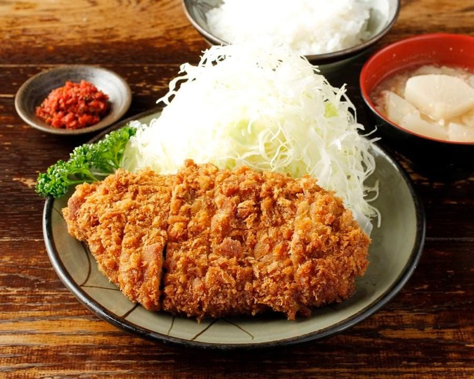
What to order: Rosu katsu teishoku (pork loin cutlet set). Comes with rice, miso soup, cabbage, and pickles. Perfectly crispy outside, juicy inside.
"As a long-term resident of Tokyo... Tonchinkan for tonkatsu. These are places where you are definitely less likely to run into other tourists and only eat with locals."
— u/DwarfCabochan, r/JapanTravelTips · 1,253 upvotes on post
tabiji verdict: Recommended by a long-term Tokyo local in one of the most upvoted restaurant posts on r/JapanTravelTips. Zero tourist crowd, all substance.
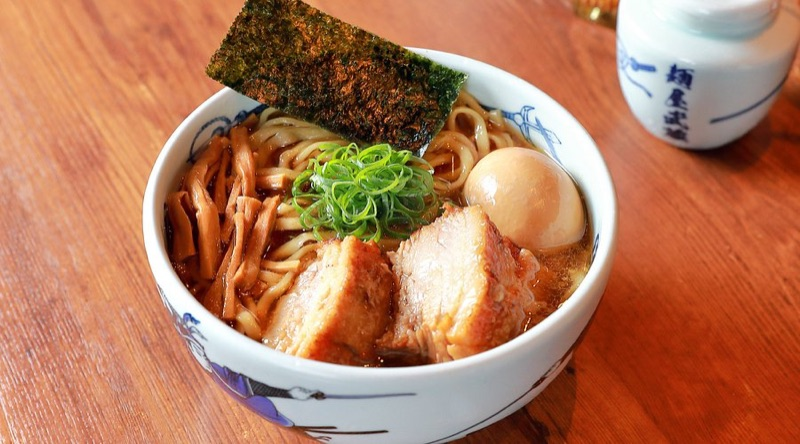
What to order: Classic ramen with their house pork broth. Nothing fancy — just deeply satisfying, old-school Tokyo ramen.
"Musashiya — different ramen styles, not Ichiran or Ippudo. These are the places local people actually go to."
— u/DwarfCabochan, r/JapanTravelTips · 1,253 upvotes on post
tabiji verdict: A no-frills local ramen shop steps from Shinjuku Station. The kind of place you'd walk right past — and that's exactly why it's good.
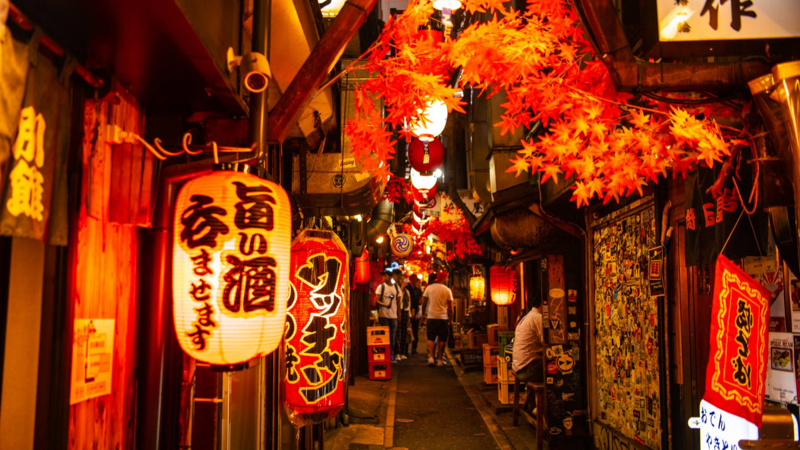
What to order: Yakitori skewers (chicken skin, tsukune, negima), grilled offal if you're adventurous, and a cold beer. Budget ¥100–¥200 per skewer.
"Dinner options: Omoide Yokochō — Aisles full of yakitori places. Go there."
— u/ChewSus, r/JapanTravel · 584 upvotes
"Memory Lane is atmospheric, smoky, and incredibly photogenic at night. Not a tourist trap — locals eat there too. Go to the quieter stalls deeper in the alley."
— r/TokyoTravel · 114 upvotes
tabiji verdict: Yes, it's famous. But it's famous for a reason — smoky yakitori alleys with ice-cold beer at budget prices. Go later at night when the tourist crowds thin out.
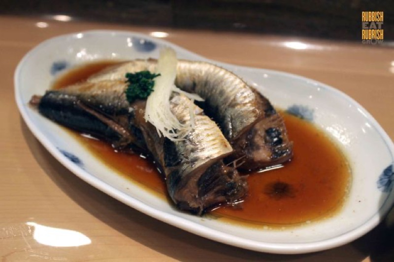
What to order: The iwashi (sardine) set lunch — it's their signature. Michelin-starred quality at lunch counter prices. Dinner is much pricier, so go for lunch.
"Nakajima in Shinjuku serves a Michelin-starred sardine lunch set for under ¥1,000. The dinner is expensive but the lunch is one of the best value meals in all of Tokyo."
— r/JapanTravel
tabiji verdict: A Michelin-starred restaurant where lunch costs less than a Starbucks combo back home. The catch: lunch only, and there's a queue. Worth every minute of waiting.
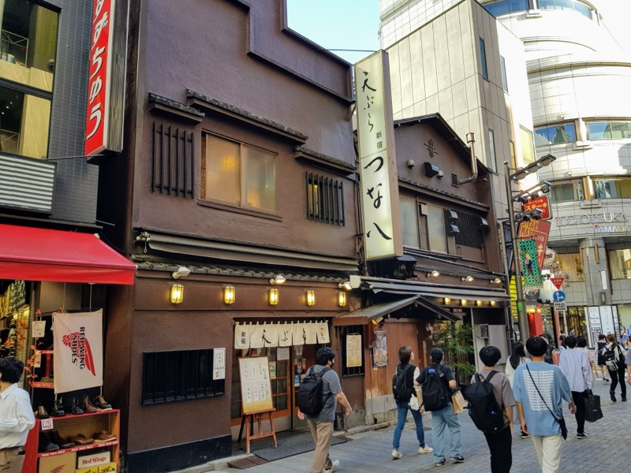
What to order: The tempura teishoku (set meal) — shrimp, seasonal vegetables, rice, and miso soup. Counter seats let you watch the chefs fry to order.
"Tsunahachi has been serving tempura since 1923. The lunch set is incredible value — crispy, light, perfectly fried. Sit at the counter."
— r/JapanTravel
tabiji verdict: A century-old tempura institution where the lunch set costs less than fast food in most Western cities. The counter experience is half the fun.
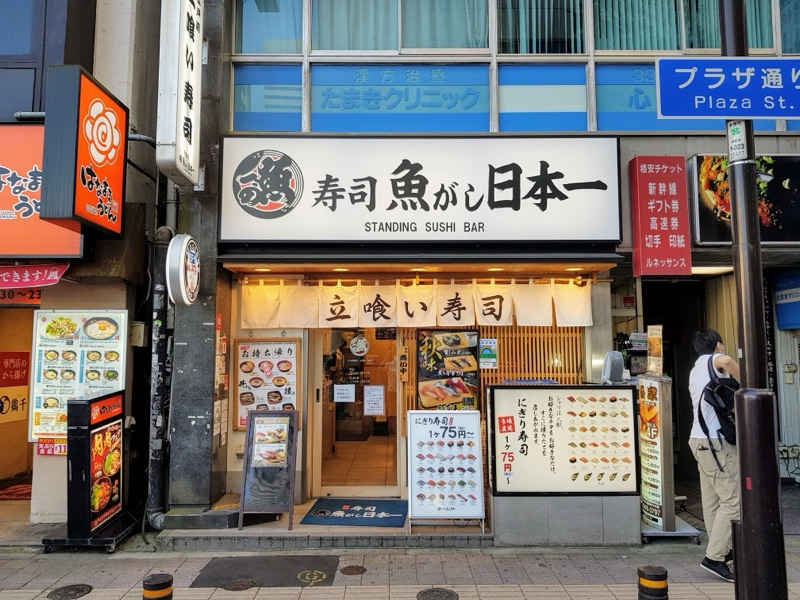
What to order: Nigiri pieces à la carte — salmon, tuna, uni if you're feeling fancy. Standing format keeps costs down and turnover fast.
"Uogashi Nihon-Ichi (Standing Sushi Bar) — sushi so good and so cheap."
— u/ChewSus, r/JapanTravel · 584 upvotes
tabiji verdict: Fresh sushi at standing-bar prices — ¥100–¥300 per piece. You won't sit down, but your wallet and taste buds will both thank you.
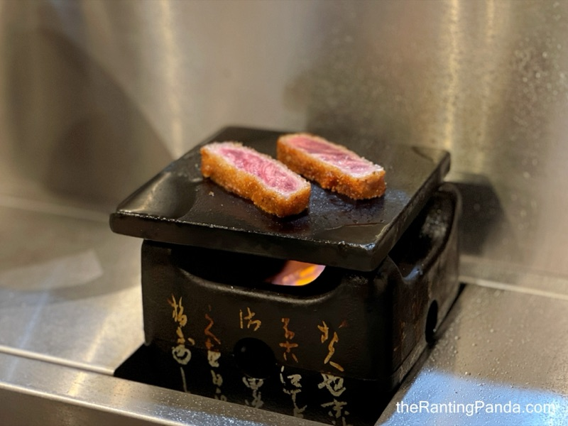
What to order: The gyukatsu set — breaded beef cutlet served rare, with a hot stone to cook it to your preferred doneness. Comes with rice, cabbage, and dipping sauces.
"Gyukatsu Motomura — multiple locations. The beef cutlet is amazing, you cook it yourself on a little hot stone at the table."
— u/ChewSus, r/JapanTravel · 584 upvotes
tabiji verdict: At ¥1,400, this is the priciest "budget" pick — but rare beef cutlet with a hot stone is an experience you can't get anywhere else. Splurge-worthy.
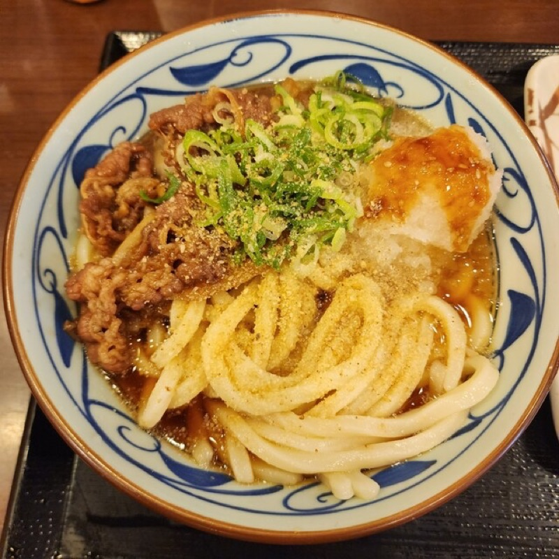
What to order: Kake udon (plain udon in dashi broth) from ¥340, then add tempura from the counter — chikuwa, onsen tamago, or kakiage.
"Cheap and delicious udon chain. Marugame Seimen — fresh noodles made in front of you, and you can eat a filling meal for under ¥500."
— u/DwarfCabochan, r/JapanTravelTips · 1,253 upvotes on post
tabiji verdict: Your cheapest filling meal in Shinjuku. A chain? Yes. Bad? Absolutely not. The noodles are made fresh on-site and the tempura bar is dangerous (in a good way).
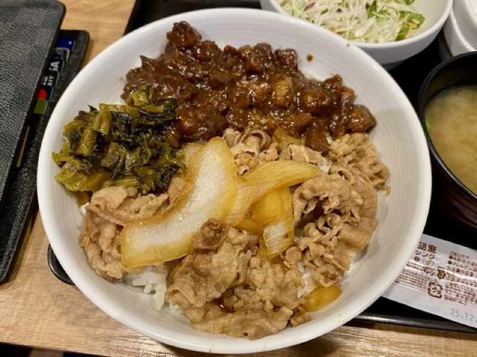
What to order: Gyudon (beef bowl) with a raw egg on top. Upgrade to the nami (regular) with miso soup set for around ¥600 total.
"Don't sleep on gyudon chains. Yoshinoya is genuinely good — a filling beef bowl for under ¥500. Japanese fast food is on another level compared to Western chains."
— r/JapanTravel
tabiji verdict: The OG gyudon chain since 1899. Not glamorous, but a ¥448 beef bowl at 2 AM after Golden Gai hits different. Open 24/7 at most locations.
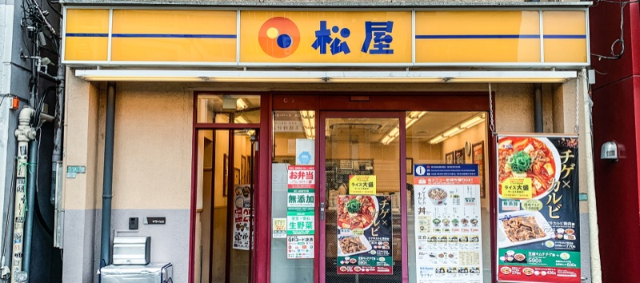
What to order: The premium gyudon or the curry gyudon. Matsuya includes miso soup free with every set — slight edge over Yoshinoya.
"Matsuya is the budget GOAT. Free miso soup, vending machine ordering so no Japanese needed, and a filling meal for ¥400."
— r/JapanTravelTips
tabiji verdict: Same deal as Yoshinoya but with free miso soup and a ticket machine so you don't need to speak a word of Japanese. Budget traveler's best friend.
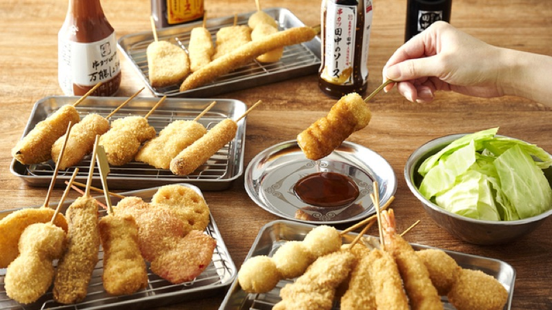
What to order: Mixed kushikatsu set — deep-fried skewers of pork, shrimp, cheese, quail egg, lotus root. Rule: no double-dipping in the communal sauce.
"Kushikatsu Tanaka — kushikatsu chain with several branches. Fun, casual, cheap. Great with beer."
— u/DwarfCabochan, r/JapanTravelTips · 1,253 upvotes on post
tabiji verdict: Deep-fried everything on sticks with cheap beer — what's not to love? The no-double-dipping rule is serious. Don't be that tourist.

What to order: Assorted yakitori — negima (chicken thigh with leek), tsukune (chicken meatball), kawa (crispy chicken skin). Skewers from ¥100 each.
"Yakitori with Kushiage — Yakitori no meimon Akiyoshi. These are places local people go to."
— u/DwarfCabochan, r/JapanTravelTips · 1,253 upvotes on post
tabiji verdict: A proper yakitori-ya where the charcoal smoke hits you at the door. Order 5–6 skewers, a beer, and you're out for under ¥1,500 feeling like a champion.
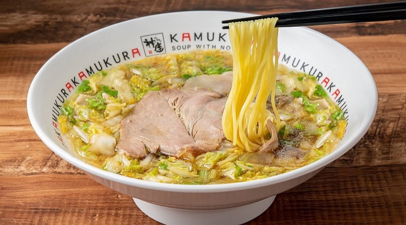
What to order: Their signature "oishii ramen" — a light, savory pork broth with napa cabbage that's completely different from heavy tonkotsu. Refreshingly un-heavy.
"Dotombori Kamukura — ramen but different from the heavy stuff. Light, veggie-forward, and you don't feel like you need a nap after."
— u/DwarfCabochan, r/JapanTravelTips · 1,253 upvotes on post
tabiji verdict: The anti-Ichiran. Light, clean, almost healthy-feeling ramen that Osaka locals love. Perfect if you're ramen'd out on heavy tonkotsu.
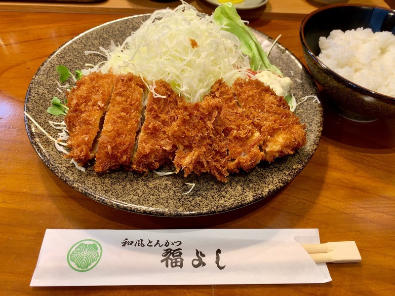
What to order: The katsu teishoku. Only open during weekday lunch — this is a local lunch spot, not a tourist dinner destination.
"Fukuyoshi (best katsu place, only open during weekday lunch)"
— u/ChewSus, r/JapanTravel · 584 upvotes
tabiji verdict: Weekday lunch only, which means zero tourists and all office workers who know their katsu. If your schedule allows, don't miss it.
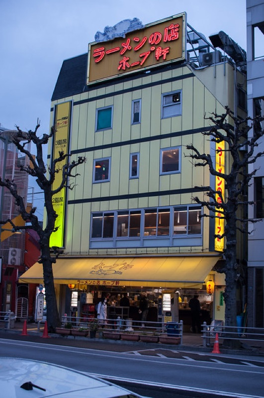
What to order: Tonkotsu shoyu ramen — their house style. Rich pork bone broth with soy. Open 24 hours.
"Hope-ken Sendagaya HQ — ramen, not Ichiran/Ippudo, and all with different styles."
— u/DwarfCabochan, r/JapanTravelTips · 1,253 upvotes on post
tabiji verdict: Open 24 hours, been serving ramen since the 1960s. The kind of late-night bowl that makes you understand why Japan takes ramen seriously.
💴 ¥1,500–¥2,000 (all-you-can-eat lunch)
📍 Shinjuku Meiji-dori
📌 Google Maps →
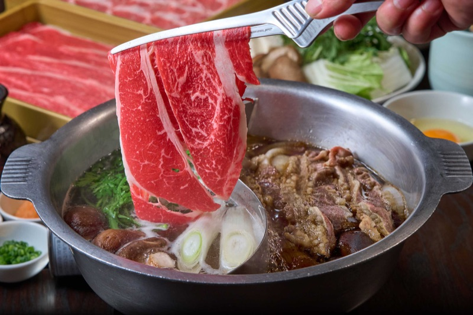
What to order: The all-you-can-eat lunch shabu-shabu set. Pick your broth (go with two — collagen and spicy), then pile in meat and vegetables.
"Or a much cheaper place to eat — Nabezo, it's a chain with many branches but good quality."
— u/DwarfCabochan, r/JapanTravelTips · 1,253 upvotes on post
tabiji verdict: All-you-can-eat shabu-shabu for under ¥2,000 at lunch. If you're traveling on a budget but want a "real Japanese meal" experience, this is it.
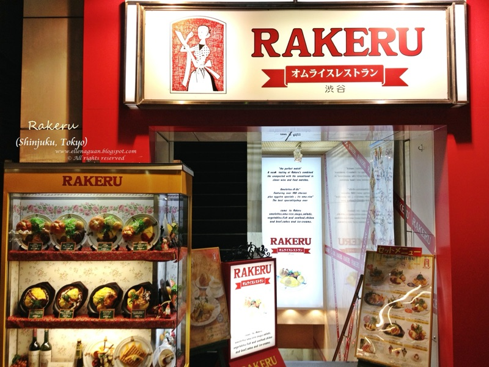
What to order: The classic omurice — fluffy eggs over ketchup fried rice. It's simple, comforting, and very Japanese yoshoku (Western-influenced).
"Rakeru — chain famous for omurice. There are several branches. Comfort food done right."
— u/DwarfCabochan, r/JapanTravelTips · 1,253 upvotes on post
tabiji verdict: Japanese comfort food at its coziest. The omurice here is the fluffy, wobbly kind you've seen in every Japanese food video. Perfect rainy-day meal.
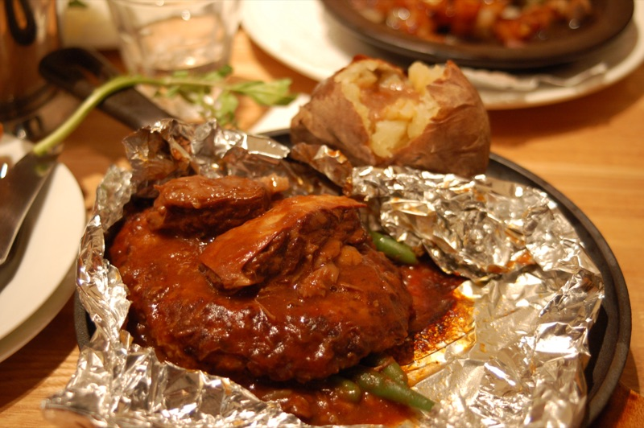
What to order: The hamburg steak wrapped in foil — their signature dish. Juicy, rich, and served sizzling. Comes with bread or rice.
"Tsubame Grill — chain famous for their hamburg steak. Several branches. It's a Japanese institution."
— u/DwarfCabochan, r/JapanTravelTips · 1,253 upvotes on post
tabiji verdict: Japanese hamburg steak is nothing like a hamburger — it's closer to a Salisbury steak but infinitely better. The foil-wrapped version at Tsubame is iconic.
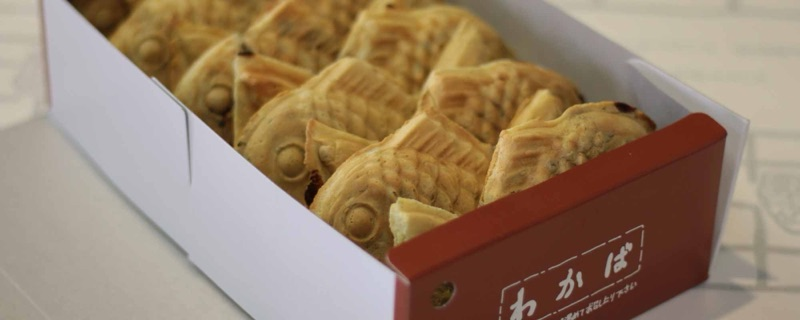
What to order: The classic taiyaki — fish-shaped pastry filled with sweet red bean paste (anko). Crispy outside, warm and gooey inside. ¥200 each.
"Taiyaki Wakaba — one of the most famous taiyaki spots in Tokyo. Been making them the old-fashioned way for decades."
— u/DwarfCabochan, r/JapanTravelTips · 1,253 upvotes on post
tabiji verdict: Not a restaurant per se, but the perfect ¥200 snack between meals. One of Tokyo's most beloved taiyaki shops — one stop from Shinjuku on the Marunouchi line.
Frequently Asked Questions
How much does a meal cost in Shinjuku?
A budget meal in Shinjuku typically costs ¥500–¥1,500 ($3.50–$10 USD). Gyudon chains start at ¥400, ramen averages ¥800–¥1,100, and a filling tonkatsu or tempura set lunch runs ¥1,000–¥1,500. You can eat three meals a day for under ¥3,000 if you mix chains with local spots.
Is Shinjuku good for cheap food?
Yes — Shinjuku is one of the best areas in Tokyo for budget eating. The station area has hundreds of restaurants competing for salarymen and students, which keeps prices low. Omoide Yokocho and the underground restaurant floors of department stores are especially good for affordable, quality meals.
Where do locals eat cheap in Shinjuku?
Locals favor spots like Musashiya (ramen), Tonchinkan (tonkatsu), Marugame Seimen (udon), and the gyudon chains. The basement floors of Lumine and Takashimaya department stores also have quality lunch sets. Most tourists queue at Ichiran while locals eat better food with no wait a block away.
What is the cheapest food in Shinjuku?
The cheapest sit-down meals are gyudon (beef bowl) at chains like Yoshinoya or Matsuya — a basic bowl starts at ¥400 (under $3). Convenience stores (7-Eleven, Lawson, FamilyMart) offer onigiri for ¥120–¥200 and bento boxes for ¥400–¥600. Standing soba shops inside the station start at ¥350.
Should I eat at Ichiran Ramen in Shinjuku?
Ichiran is decent but overrated for the price (¥1,100+). Tokyo residents and experienced travelers consistently recommend Fuunji (tsukemen), Musashiya, or Dotombori Kamukura instead — all cheaper, less crowded, and arguably better. As one Tokyo local put it: "Every time I walk by Ichiran in Shinjuku I have to chuckle seeing all the tourists waiting in line."
Can I eat well in Shinjuku on ¥2,000 per day?
It's tight but doable. A convenience store breakfast (¥400), a gyudon or udon lunch (¥500–¥700), and a ramen dinner (¥800–¥1,000) keeps you under ¥2,000. For ¥3,000/day you can eat comfortably at sit-down restaurants for every meal.
Do I need to speak Japanese to order at these restaurants?
No. Most budget restaurants in Shinjuku use ticket vending machines (食券機) where you simply insert money and press a button with a picture. Chains like Yoshinoya, Matsuya, and Marugame Seimen are entirely vending-machine based. Even at non-chain spots, pointing at the menu or photos works fine.